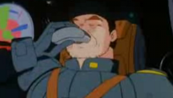

Zeon Patrols Zeon Patrols
The Black Tri-Stars Some of the best mobile suit pilots of the war, the Black Tri Stars are Dozles personal elite force, Gaia, Ortega and Mash being known as the soldiers who sunk the Ananke at the battle of Lourm and captured General Revil. Famous for their black and purple colorscheme and teamwork related tactics, their fearsome Jetstreamm Attack has been unstoppable to this date. Now serving on the ground war as a special "gift" from Dozle to Garma, they are some of the strongest pilots on the surface of the Earth to date. 
The Midnight Fenrirs Although a larger corps than a single mobile suit team, the elite of the Midnight Fenrirs are currently stationed as border guards in North America, going on repeated skirmishes with the Desert Eagles and the Invincible Third. Led from California Base by Lieutenant Commander Gerhart Schmeisser, a veteran mobile suit pilot from the Riah Revolution but now an incapacitated rear lines commander, the Midnight Fenrirs are a formidable team.  The Cyclops Team An old team with a long history together, the SS commanded Cyclops Team members are experts in the art of espionage and guerilla warfare, as well as established MSM pilots. Currently stationed defending the waters of New York, they are unforgiving soldiers who work as a well oiled machine, with a lot of commeraderie between them. The Karakals An expert mobile suit team stationed in South Africa, major Roy Greenwood is well known as an excellent mobile suit pilot, and has used his political clout to be sent one of the first harsh conditions Dom units for his personal use. The Karakals color scheme is a thick savanna camouflage, and their lighting fast ambushes are extremely effective. The Pink Panthers Experts at defending the shores of Northern Africa, the Pink Panthers are deadly opponents, using their jetskis to quickly move up to enemy targets before delivering the killing blow in hand to hand. Their bright pink colorscheme is seen as an insult by the Federation, but shooting one down is a difficult feat, especially amongst the desert climate in which their Zakus are so effective. Cima Garahau and the Cleopatra Famous for her cruelty and malevolence, Cima Garahau joined the military at a young age, and finds the power of her own command extremely appealing. Her Musai is one of the main patrols of Zeon occupied Earth Orbit, and when she is not attacking supply lines moving between Jaburo and Luna II, she is making spot raids on the asteroid itself. Her bridge chair is decorated with a white siberian tigers pelt, given to her by Vladivostok commander Antonov, from whom she recieves frequent love letters. Boone and the Falmel A man trained to captain both ships and submarines, Boone has a reputation for revenge and avarice against his enemies, and extreme comeraderie amongst his friends. He is one of Chars closest friends and companions, and is trusted with the Falmel, one of the finest pieces of Zeone engineering. Boone was angered that he could not go to Earth with Char, but will loyally patrol Earths Orbit until his triumphant return. |